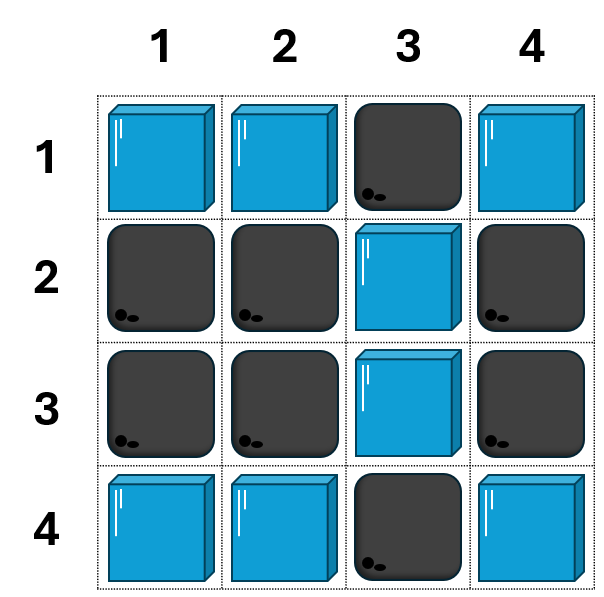

Pak Dengklek sedang berada di sebuah kebun di dekat kota Malang. Kebun ini berukuran $4 \times 4$, yang baris-barisnya dinomori $1$ sampai $4$ dari atas ke bawah, dan kolom-kolomnya dinomori dari $1$ sampai $4$ dari kiri ke kanan. Petak pada baris $r$ dan kolom $c$ dinyatakan sebagai $(r, c)$.
Setiap petak dari $16$ petak pada kebun ini dapat berupa salah satu dari dua jenis: petak es ataupun petak batu. Kebun tempat Pak Dengklek sudah pasti berupa seperti yang diilustrasikan sebagai berikut, dengan petak biru sebagai petak es, dan petak abu sebagai petak batu.

Pak Dengklek sedang berada di suatu petak. Dalam satu langkah, Pak Dengklek dapat bergerak $1$ petak ke atas, bawah, kiri, atau kanan. Kebun ini ajaib, karena ketika Pak Dengklek:
Anda tidak tahu di mana Pak Dengklek berada saat ini. Anda menantang Pak Dengklek bahwa Anda bisa menebak lokasi Pak Dengklek sekarang dengan menyuruh Pak Dengklek melakukan $Q$ buah gerakan. Pak Dengklek akan pertama memberi tahu Anda jenis petak yang ia tempati sekarang. Kemudian, setiap kali ia melakukan gerakan, ia akan memberi tahu Anda juga petak yang ia tempati setelah melakukan gerakan tersebut.
Anda harus bisa menebak petak tempat Pak Dengklek berada pada awalnya, setelah Pak Dengklek melaporkan jenis petak-petak yang ia tempati dari $Q$ gerakan tersebut.
Soal ini bertipe "interaktif". Pada soal ini, Anda akan berinteraksi dengan program penguji melalui masukan standar (stdin) dan keluaran standar (stdout). Perhatikan interaksi di bawah ini dengan saksama.
Awalnya, Anda akan memberikan nilai $Q$ dalam satu baris.
Kemudian, Pak Dengklek akan memberi tahu jenis petak dengan memberikan ES atau BATU kepada Anda.
Kemudian, sebanyak $Q$ kali, Anda menyuruh Pak Dengklek untuk bergerak dengan mengeluarkan:
U: untuk bergerak ke atas;
D: untuk bergerak ke bawah;
L: untuk bergerak ke kiri;
R: untuk bergerak ke kanan;
Setiap kali selesai melakukan satu gerakan, Pak Dengklek akan memberi tahu jenis petak dengan memberikan ES atau BATU kepada Anda.
Setelah melakukan semua $Q$ gerakan, Anda harus mengeluarkan dua bilangan $r$ dan $c$ dalam satu baris, yang artinya Anda tahu bahwa Pak Dengklek berada pada petak baris $r$ dan kolom $c$ pada awalnya.
Poin Anda bergantung dari nilai $Q$ yang Anda berikan.
Jika Anda tidak berhasil menebak posisi Pak Dengklek pada awalnya dengan benar, maka Anda akan mendapatkan "Wrong Answer". Anda akan dianggap benar jika Anda berhasil mengeluarkan posisi Pak Dengklek pada awalnya dengan benar, dan Anda akan mendapatkan nilai penuh atau nilai parsial.
Nilai yang didapatkan pada suatu kasus uji dihitung berdasarkan tabel berikut:
| Kondisi | Poin |
|---|---|
| $Q > 16$ | $10$ |
| $13 \leq Q \leq 16$ | $20$ |
| $9 \leq Q \leq 12$ | $30$ |
| $7 \leq Q \leq 8$ | $40$ |
| $Q = 6$ | $55$ |
| $Q = 5$ | $70$ |
| $Q = 4$ | $85$ |
| $Q \leq 3$ | $100$ |
Nilai uang Anda peroleh pada soal ini adalah minimum dari semua nilai yang Anda peroleh dari setiap kasus uji.
Pada contoh berikut, Pak Dengklek awalnya berada pada petak $(1, 2)$.
| Masukan | Keluaran | Penjelasan |
|---|---|---|
5 |
Ini berarti Anda menyuruh Pak Dengklek untuk melakukan $5$ gerakan. | |
ES |
Pak Dengklek awalnya berada di petak es. | |
R |
Ini berarti Anda menyuruh Pak Dengklek bergerak ke kanan. | |
BATU |
Setelah bergerak, Pak Dengklek sekarang berada di petak batu. | |
U |
Ini berarti Anda menyuruh Pak Dengklek bergerak ke atas. | |
BATU |
Setelah bergerak, Pak Dengklek sekarang berada di petak batu. | |
L |
Ini berarti Anda menyuruh Pak Dengklek bergerak ke kiri. | |
ES |
Setelah bergerak, Pak Dengklek sekarang berada di petak es. | |
D |
Ini berarti Anda menyuruh Pak Dengklek bergerak ke bawah. | |
ES |
Setelah bergerak, Pak Dengklek sekarang berada di petak es. | |
L |
Ini berarti Anda menyuruh Pak Dengklek bergerak ke kiri. | |
ES |
Setelah bergerak, Pak Dengklek sekarang berada di petak es. | |
1 2 |
Anda menebak bahwa Pak Dengklek awalnya berada pada petak $(1, 2)$ | |
| (selesai) | (selesai) | Interaksi berakhir dan Anda mendapatkan poin pada kasus uji ini. |
Selalu lakukan flush setiap kali setelah program Anda mengeluarkan keluaran.
stdio.h (cstdio):
fflush(stdout);
iostream:
std::cout << std::flush;